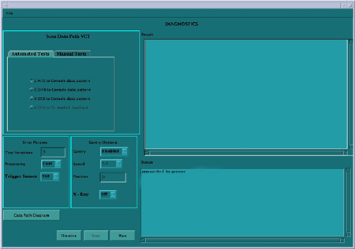

Operating Documentation
Direction 5307452-8EN, Rev# 4
Discovery CT750 HD Service Methods - Adv
Operating Documentation |
| Last Revised: | July 25, 2008 |
The Scan data path diagnostic is intended to aid in troubleshooting intermittent failures along the scan data path from the A/D boards of the Digital Module (FRDM) and Console.
There are two main tabs on the top left for Automated and Manual test selections. The automated test selections run without any user intervention. The manual tests require manual intervention such as loopback testing that requires manual cable connection changes. Grouped in with the manual tests is also the Power supply reporting that checks all power supply voltages in the DAS/Detector subsystem.
Illustration 1: Scan Data Path Screen

Test 1 runs a known data pattern from the A/D board back to the console. The Host then compares the data pattern to the known pattern and indicates any difference as an error. Test 2 and 3 work the same way from the DIFB and DCB.
There are several test options available in the bottom left of the GUI to aid in troubleshooting problems that may be caused by interactions with other gantry functions. These test options are grouped into Gantry options and Other Options and are further defined below:
Test Iterations – allows the user to run multiple tests back to back to test for intermittant issues.
Processing – Continuous mode that run the tests until completion or Stop mode that will stop on the first error.
Trigger Source – trigger data collection using the normal TGP source or the DCB internally generated triggers.
Gantry – Disabled is the default, Enabled opens the Speed field for the user to select a rotation speed, Position opens the position field to allow the user to select a specific tube position (typical for slipring antenna troubleshooting). Gantry rotation enabled or position selected requires a Scan button press to initiate the test.
Speed – Selectable gantry speed once Gantry rotation is enabled.
Position – Allows an entry from 0-359. Value represents the tube location with zero at the top of the gantry and moving clockwise around the gantry.
Xray – Turns xray on or off for the test scan. A low technique scan is used with the filter closed and collimator at its smallest opening. Xray enabled requires a Scan button press to initiate the test.
Data pattern test results for the A/D, DIFB, and DCB boards can be viewed using Scan Analysis. Note the Exam and series for the desired test to view in the result screen of the Scan Data Path GUI.
The Manual tab - [Show Power Supplies] button when selected and run will display a list of all DCB and DIFB power supplies. See example output below. Some detector types will only show the odd numbered DIFB's.
A log file is also generated of this output data. The log file is found in /usr/g/service/state and is called “ssw.powerSupply.log”. This is a text file of the same output sent to the screen.
The DCB and DIFB power supplies are all read as listed. The Digital Module power supplies are generated by the DIFB but sent to power the Digital Modules (FRDM's). The power supplies are labeled with the DIFB they come from and which Digital Module is using them.
Scan Analysis Aux channels can be used to plot all the power supplies and temperature readings taken during any scan currently on the system.
Table 1: Power supply specifications
| Power Supply | Specification |
| All DCB power supplies except 48V | +/-5% |
| 48V | 45V Lower Spec Limit |
| All DIFB and Module power supplies | +/- 8% |
Below is an example output. The actual supplies and data shown will be different depending on the DAS type.
Tue Aug 22 09:21:44 2006 Run test: Scan Data Path Diagnostics Tue Aug 22 09:21:44 2006 New selected value SHOW_POWER_SUPPLIES Tue Aug 22 09:27:15 2006 DCB POWER SUPPLIES (Volts): Tue Aug 22 09:27:15 2006 --------------------------------------------------- Tue Aug 22 09:27:15 2006 Channel LSL USL Actual P/F Tue Aug 22 09:27:15 2006 --------------------------------------------------- Tue Aug 22 09:27:15 2006 P_variable 9.11 10.69 9.90 Pass Tue Aug 22 09:27:15 2006 +3.3_Digital 3.04 3.56 3.28 Pass Tue Aug 22 09:27:15 2006 -5.0_Analog -5.40 -4.60 -4.84 Pass Tue Aug 22 09:27:15 2006 +5.0_Analog 4.60 5.40 4.99 Pass Tue Aug 22 09:27:15 2006 +48 44.16 100.00 47.96 Pass Tue Aug 22 09:27:15 2006 +48_rtn -0.50 0.50 0.00 Pass Tue Aug 22 09:27:15 2006 ------------------------------------------- Tue Aug 22 09:27:15 2006 Tue Aug 22 09:27:15 2006 Tue Aug 22 09:27:15 2006 Tue Aug 22 09:27:15 2006 DIFB POWER SUPPLIES (Volts): Tue Aug 22 09:27:15 2006 ------------------------------------------------------------ Tue Aug 22 09:27:15 2006 +1.5 DIG +1.8 DIG +3.3 DIG +3.3 ANA Tue Aug 22 09:27:15 2006 ------------------------------------------------------------ Tue Aug 22 09:27:15 2006 PS_DIFB# LSL USL Actual P/F Tue Aug 22 09:27:15 2006 ------------------------------------------------------------ Tue Aug 22 09:27:15 2006 Tue Aug 22 09:27:15 2006 +0.9_Ref1 0.83 0.97 0.91 Pass Tue Aug 22 09:27:15 2006 +0.9_Term1 0.83 0.97 0.91 Pass Tue Aug 22 09:27:15 2006 +1.05_Dig1 0.97 1.13 1.03 Pass Tue Aug 22 09:27:15 2006 +1.2_Dig1 1.10 1.30 1.19 Pass Tue Aug 22 09:27:15 2006 +1.5_Dig1 1.38 1.62 1.50 Pass Tue Aug 22 09:27:15 2006 +1.8_Dig1 1.66 1.94 1.80 Pass Tue Aug 22 09:27:15 2006 +2.5_IO1 2.30 2.70 2.48 Pass Tue Aug 22 09:27:15 2006 +3.3_Dig1 3.04 3.56 3.21 Pass Tue Aug 22 09:27:15 2006 +3.3_Ana1 3.04 3.56 3.19 Pass Tue Aug 22 09:27:15 2006 Tue Aug 22 09:27:15 2006 +0.9_Ref3 0.83 0.97 0.91 Pass Tue Aug 22 09:27:15 2006 +0.9_Term3 0.83 0.97 0.91 Pass Tue Aug 22 09:27:15 2006 +1.05_Dig3 0.97 1.13 1.04 Pass Tue Aug 22 09:27:15 2006 +1.2_Dig3 1.10 1.30 1.19 Pass Tue Aug 22 09:27:15 2006 +1.5_Dig3 1.38 1.62 1.48 Pass Tue Aug 22 09:27:15 2006 +1.8_Dig3 1.66 1.94 1.80 Pass Tue Aug 22 09:27:15 2006 +2.5_IO3 2.30 2.70 2.51 Pass Tue Aug 22 09:27:15 2006 +3.3_Dig3 3.04 3.56 3.21 Pass Tue Aug 22 09:27:15 2006 +3.3_Ana3 3.04 3.56 3.21 Pass Tue Aug 22 09:27:15 2006 Tue Aug 22 09:27:15 2006 +0.9_Ref5 0.83 0.97 0.91 Pass Tue Aug 22 09:27:15 2006 +0.9_Term5 0.83 0.97 0.90 Pass Tue Aug 22 09:27:15 2006 +1.05_Dig5 0.97 1.13 1.04 Pass Tue Aug 22 09:27:15 2006 +1.2_Dig5 1.10 1.30 1.19 Pass Tue Aug 22 09:27:15 2006 +1.5_Dig5 1.38 1.62 1.47 Pass Tue Aug 22 09:27:15 2006 +1.8_Dig5 1.66 1.94 1.80 Pass Tue Aug 22 09:27:15 2006 +2.5_IO5 2.30 2.70 2.50 Pass Tue Aug 22 09:27:15 2006 +3.3_Dig5 3.04 3.56 3.22 Pass Tue Aug 22 09:27:15 2006 +3.3_Ana5 3.04 3.56 3.23 Pass Tue Aug 22 09:27:15 2006 Tue Aug 22 09:27:15 2006 +0.9_Ref7 0.83 0.97 0.91 Pass Tue Aug 22 09:27:15 2006 +0.9_Term7 0.83 0.97 0.91 Pass Tue Aug 22 09:27:15 2006 +1.05_Dig7 0.97 1.13 1.03 Pass Tue Aug 22 09:27:15 2006 +1.2_Dig7 1.10 1.30 1.20 Pass Tue Aug 22 09:27:15 2006 +1.5_Dig7 1.38 1.62 1.49 Pass Tue Aug 22 09:27:15 2006 +1.8_Dig7 1.66 1.94 1.80 Pass Tue Aug 22 09:27:15 2006 +2.5_IO7 2.30 2.70 2.47 Pass Tue Aug 22 09:27:15 2006 +3.3_Dig7 3.04 3.56 3.21 Pass Tue Aug 22 09:27:15 2006 +3.3_Ana7 3.04 3.56 3.21 Pass Tue Aug 22 09:27:15 2006 Tue Aug 22 09:27:15 2006 +0.9_Ref9 0.83 0.97 0.91 Pass Tue Aug 22 09:27:15 2006 +0.9_Term9 0.83 0.97 0.90 Pass Tue Aug 22 09:27:15 2006 +1.05_Dig9 0.97 1.13 1.03 Pass Tue Aug 22 09:27:15 2006 +1.2_Dig9 1.10 1.30 1.20 Pass Tue Aug 22 09:27:15 2006 +1.5_Dig9 1.38 1.62 1.49 Pass Tue Aug 22 09:27:15 2006 +1.8_Dig9 1.66 1.94 1.81 Pass Tue Aug 22 09:27:15 2006 +2.5_IO9 2.30 2.70 2.54 Pass Tue Aug 22 09:27:15 2006 +3.3_Dig9 3.04 3.56 3.22 Pass Tue Aug 22 09:27:15 2006 +3.3_Ana9 3.04 3.56 3.21 Pass Tue Aug 22 09:27:15 2006 Tue Aug 22 09:27:15 2006 +0.9_Ref11 0.83 0.97 0.91 Pass Tue Aug 22 09:27:15 2006 +0.9_Term11 0.83 0.97 0.90 Pass Tue Aug 22 09:27:15 2006 +1.05_Dig11 0.97 1.13 1.04 Pass Tue Aug 22 09:27:15 2006 +1.2_Dig11 1.10 1.30 1.18 Pass Tue Aug 22 09:27:15 2006 +1.5_Dig11 1.38 1.62 1.48 Pass Tue Aug 22 09:27:15 2006 +1.8_Dig11 1.66 1.94 1.80 Pass Tue Aug 22 09:27:15 2006 +2.5_IO11 2.30 2.70 2.47 Pass Tue Aug 22 09:27:15 2006 +3.3_Dig11 3.04 3.56 3.23 Pass Tue Aug 22 09:27:15 2006 +3.3_Ana11 3.04 3.56 3.21 Pass Tue Aug 22 09:27:15 2006 Tue Aug 22 09:27:15 2006 +0.9_Ref13 0.83 0.97 0.92 Pass Tue Aug 22 09:27:15 2006 +0.9_Term13 0.83 0.97 0.90 Pass Tue Aug 22 09:27:15 2006 +1.05_Dig13 0.97 1.13 1.04 Pass Tue Aug 22 09:27:15 2006 +1.2_Dig13 1.10 1.30 1.19 Pass Tue Aug 22 09:27:15 2006 +1.5_Dig13 1.38 1.62 1.50 Pass Tue Aug 22 09:27:15 2006 +1.8_Dig13 1.66 1.94 1.81 Pass Tue Aug 22 09:27:15 2006 +2.5_IO13 2.30 2.70 2.52 Pass Tue Aug 22 09:27:15 2006 +3.3_Dig13 3.04 3.56 3.24 Pass Tue Aug 22 09:27:15 2006 +3.3_Ana13 3.04 3.56 3.23 Pass Tue Aug 22 09:27:15 2006 Tue Aug 22 09:27:15 2006 +0.9_Ref15 0.83 0.97 0.91 Pass Tue Aug 22 09:27:15 2006 +0.9_Term15 0.83 0.97 0.89 Pass Tue Aug 22 09:27:15 2006 +1.05_Dig15 0.97 1.13 1.03 Pass Tue Aug 22 09:27:15 2006 +1.2_Dig15 1.10 1.30 1.20 Pass Tue Aug 22 09:27:15 2006 +1.5_Dig15 1.38 1.62 1.47 Pass Tue Aug 22 09:27:15 2006 +1.8_Dig15 1.66 1.94 1.78 Pass Tue Aug 22 09:27:15 2006 +2.5_IO15 2.30 2.70 2.49 Pass Tue Aug 22 09:27:15 2006 +3.3_Dig15 3.04 3.56 3.22 Pass Tue Aug 22 09:27:15 2006 +3.3_Ana15 3.04 3.56 3.21 Pass Tue Aug 22 09:27:15 2006 Tue Aug 22 09:27:15 2006 +0.9_Ref17 0.83 0.97 0.92 Pass Tue Aug 22 09:27:15 2006 +0.9_Term17 0.83 0.97 0.91 Pass Tue Aug 22 09:27:15 2006 +1.05_Dig17 0.97 1.13 1.05 Pass Tue Aug 22 09:27:15 2006 +1.2_Dig17 1.10 1.30 1.20 Pass Tue Aug 22 09:27:15 2006 +1.5_Dig17 1.38 1.62 1.49 Pass Tue Aug 22 09:27:15 2006 +1.8_Dig17 1.66 1.94 1.81 Pass Tue Aug 22 09:27:15 2006 +2.5_IO17 2.30 2.70 2.51 Pass Tue Aug 22 09:27:15 2006 +3.3_Dig17 3.04 3.56 3.23 Pass Tue Aug 22 09:27:15 2006 +3.3_Ana17 3.04 3.56 3.23 Pass Tue Aug 22 09:27:15 2006 Tue Aug 22 09:27:15 2006 +0.9_Ref19 0.83 0.97 0.91 Pass Tue Aug 22 09:27:15 2006 +0.9_Term19 0.83 0.97 0.91 Pass Tue Aug 22 09:27:15 2006 +1.05_Dig19 0.97 1.13 1.04 Pass Tue Aug 22 09:27:15 2006 +1.2_Dig19 1.10 1.30 1.20 Pass Tue Aug 22 09:27:15 2006 +1.5_Dig19 1.38 1.62 1.49 Pass Tue Aug 22 09:27:15 2006 +1.8_Dig19 1.66 1.94 1.81 Pass Tue Aug 22 09:27:15 2006 +2.5_IO19 2.30 2.70 2.50 Pass Tue Aug 22 09:27:15 2006 +3.3_Dig19 3.04 3.56 3.23 Pass Tue Aug 22 09:27:15 2006 +3.3_Ana19 3.04 3.56 3.21 Pass Tue Aug 22 09:27:15 2006 Tue Aug 22 09:27:15 2006 +0.9_Ref21 0.83 0.97 0.92 Pass Tue Aug 22 09:27:15 2006 +0.9_Term21 0.83 0.97 0.91 Pass Tue Aug 22 09:27:15 2006 +1.05_Dig21 0.97 1.13 1.04 Pass Tue Aug 22 09:27:15 2006 +1.2_Dig21 1.10 1.30 1.20 Pass Tue Aug 22 09:27:15 2006 +1.5_Dig21 1.38 1.62 1.49 Pass Tue Aug 22 09:27:15 2006 +1.8_Dig21 1.66 1.94 1.80 Pass Tue Aug 22 09:27:15 2006 +2.5_IO21 2.30 2.70 2.50 Pass Tue Aug 22 09:27:15 2006 +3.3_Dig21 3.04 3.56 3.23 Pass Tue Aug 22 09:27:15 2006 +3.3_Ana21 3.04 3.56 3.23 Pass Tue Aug 22 09:27:15 2006 Tue Aug 22 09:27:15 2006 +0.9_Ref23 0.83 0.97 0.91 Pass Tue Aug 22 09:27:15 2006 +0.9_Term23 0.83 0.97 0.91 Pass Tue Aug 22 09:27:15 2006 +1.05_Dig23 0.97 1.13 1.03 Pass Tue Aug 22 09:27:15 2006 +1.2_Dig23 1.10 1.30 1.20 Pass Tue Aug 22 09:27:15 2006 +1.5_Dig23 1.38 1.62 1.49 Pass Tue Aug 22 09:27:15 2006 +1.8_Dig23 1.66 1.94 1.80 Pass Tue Aug 22 09:27:15 2006 +2.5_IO23 2.30 2.70 2.50 Pass Tue Aug 22 09:27:15 2006 +3.3_Dig23 3.04 3.56 3.23 Pass Tue Aug 22 09:27:15 2006 +3.3_Ana23 3.04 3.56 3.21 Pass Tue Aug 22 09:27:15 2006 Tue Aug 22 09:27:15 2006 +0.9_Ref25 0.83 0.97 0.90 Pass Tue Aug 22 09:27:15 2006 +0.9_Term25 0.83 0.97 0.89 Pass Tue Aug 22 09:27:15 2006 +1.05_Dig25 0.97 1.13 1.04 Pass Tue Aug 22 09:27:15 2006 +1.2_Dig25 1.10 1.30 1.19 Pass Tue Aug 22 09:27:15 2006 +1.5_Dig25 1.38 1.62 1.48 Pass Tue Aug 22 09:27:15 2006 +1.8_Dig25 1.66 1.94 1.78 Pass Tue Aug 22 09:27:15 2006 +2.5_IO25 2.30 2.70 2.50 Pass Tue Aug 22 09:27:15 2006 +3.3_Dig25 3.04 3.56 3.23 Pass Tue Aug 22 09:27:15 2006 +3.3_Ana25 3.04 3.56 3.21 Pass Tue Aug 22 09:27:15 2006 Tue Aug 22 09:27:15 2006 +0.9_Ref27 0.83 0.97 0.92 Pass Tue Aug 22 09:27:15 2006 +0.9_Term27 0.83 0.97 0.91 Pass Tue Aug 22 09:27:15 2006 +1.05_Dig27 0.97 1.13 1.04 Pass Tue Aug 22 09:27:15 2006 +1.2_Dig27 1.10 1.30 1.19 Pass Tue Aug 22 09:27:15 2006 +1.5_Dig27 1.38 1.62 1.49 Pass Tue Aug 22 09:27:15 2006 +1.8_Dig27 1.66 1.94 1.81 Pass Tue Aug 22 09:27:15 2006 +2.5_IO27 2.30 2.70 2.49 Pass Tue Aug 22 09:27:15 2006 +3.3_Dig27 3.04 3.56 3.23 Pass Tue Aug 22 09:27:15 2006 +3.3_Ana27 3.04 3.56 3.22 Pass Tue Aug 22 09:27:15 2006 Tue Aug 22 09:27:15 2006 +0.9_Ref29 0.83 0.97 0.91 Pass Tue Aug 22 09:27:15 2006 +0.9_Term29 0.83 0.97 0.91 Pass Tue Aug 22 09:27:15 2006 +1.05_Dig29 0.97 1.13 1.04 Pass Tue Aug 22 09:27:15 2006 +1.2_Dig29 1.10 1.30 1.20 Pass Tue Aug 22 09:27:15 2006 +1.5_Dig29 1.38 1.62 1.50 Pass Tue Aug 22 09:27:15 2006 +1.8_Dig29 1.66 1.94 1.81 Pass Tue Aug 22 09:27:15 2006 +2.5_IO29 2.30 2.70 2.51 Pass Tue Aug 22 09:27:15 2006 +3.3_Dig29 3.04 3.56 3.25 Pass Tue Aug 22 09:27:15 2006 +3.3_Ana29 3.04 3.56 3.27 Pass Tue Aug 22 09:27:15 2006 Tue Aug 22 09:27:15 2006 Tue Aug 22 09:27:15 2006 Tue Aug 22 09:27:15 2006 DIGITAL MODULE POWER SUPPLIES (Volts): Tue Aug 22 09:27:15 2006 ------------------------------------------------------------ Tue Aug 22 09:27:15 2006 +2.5 DIG +2.5 ANA -2.5 DIG Tue Aug 22 09:27:15 2006 ------------------------------------------------------------ Tue Aug 22 09:27:15 2006 PS_DigMod#_DIFB# LSL USL Actual P/F Tue Aug 22 09:27:15 2006 ------------------------------------------------------------ Tue Aug 22 09:27:15 2006 Tue Aug 22 09:27:15 2006 +2.5_Dig_Mod1_Ifb1 2.30 2.70 2.50 Pass Tue Aug 22 09:27:15 2006 +2.5_Ana_Mod1_Ifb1 2.30 2.70 2.51 Pass Tue Aug 22 09:27:15 2006 -2.5_Dig_Mod1_Ifb1 -2.70 -2.30 -2.45 Pass Tue Aug 22 09:27:15 2006 Tue Aug 22 09:27:15 2006 +2.5_Dig_Mod2_Ifb1 2.30 2.70 2.48 Pass Tue Aug 22 09:27:15 2006 +2.5_Ana_Mod2_Ifb1 2.30 2.70 2.50 Pass Tue Aug 22 09:27:15 2006 -2.5_Dig_Mod2_Ifb1 -2.70 -2.30 -2.47 Pass Tue Aug 22 09:27:15 2006 Tue Aug 22 09:27:15 2006 +2.5_Dig_Mod3_Ifb1 2.30 2.70 2.48 Pass Tue Aug 22 09:27:15 2006 +2.5_Ana_Mod3_Ifb1 2.30 2.70 2.49 Pass Tue Aug 22 09:27:15 2006 -2.5_Dig_Mod3_Ifb1 -2.70 -2.30 -2.48 Pass Tue Aug 22 09:27:15 2006 Tue Aug 22 09:27:15 2006 +2.5_Dig_Mod4_Ifb1 2.30 2.70 2.48 Pass Tue Aug 22 09:27:15 2006 +2.5_Ana_Mod4_Ifb1 2.30 2.70 2.51 Pass Tue Aug 22 09:27:15 2006 -2.5_Dig_Mod4_Ifb1 -2.70 -2.30 -2.46 Pass Tue Aug 22 09:27:15 2006 Tue Aug 22 09:27:15 2006 +2.5_Dig_Mod5_Ifb3 2.30 2.70 2.49 Pass Tue Aug 22 09:27:15 2006 +2.5_Ana_Mod5_Ifb3 2.30 2.70 2.50 Pass Tue Aug 22 09:27:15 2006 -2.5_Dig_Mod5_Ifb3 -2.70 -2.30 -2.49 Pass Tue Aug 22 09:27:15 2006 Tue Aug 22 09:27:15 2006 +2.5_Dig_Mod6_Ifb3 2.30 2.70 2.47 Pass Tue Aug 22 09:27:15 2006 +2.5_Ana_Mod6_Ifb3 2.30 2.70 2.49 Pass Tue Aug 22 09:27:15 2006 -2.5_Dig_Mod6_Ifb3 -2.70 -2.30 -2.47 Pass Tue Aug 22 09:27:15 2006 Tue Aug 22 09:27:15 2006 +2.5_Dig_Mod7_Ifb3 2.30 2.70 2.46 Pass Tue Aug 22 09:27:15 2006 +2.5_Ana_Mod7_Ifb3 2.30 2.70 2.50 Pass Tue Aug 22 09:27:15 2006 -2.5_Dig_Mod7_Ifb3 -2.70 -2.30 -2.49 Pass Tue Aug 22 09:27:15 2006 Tue Aug 22 09:27:15 2006 +2.5_Dig_Mod8_Ifb3 2.30 2.70 2.48 Pass Tue Aug 22 09:27:15 2006 +2.5_Ana_Mod8_Ifb3 2.30 2.70 2.50 Pass Tue Aug 22 09:27:15 2006 -2.5_Dig_Mod8_Ifb3 -2.70 -2.30 -2.48 Pass Tue Aug 22 09:27:15 2006 Tue Aug 22 09:27:15 2006 +2.5_Dig_Mod9_Ifb5 2.30 2.70 2.48 Pass Tue Aug 22 09:27:15 2006 +2.5_Ana_Mod9_Ifb5 2.30 2.70 2.48 Pass Tue Aug 22 09:27:15 2006 -2.5_Dig_Mod9_Ifb5 -2.70 -2.30 -2.47 Pass Tue Aug 22 09:27:15 2006 Tue Aug 22 09:27:15 2006 +2.5_Dig_Mod10_Ifb5 2.30 2.70 2.48 Pass Tue Aug 22 09:27:15 2006 +2.5_Ana_Mod10_Ifb5 2.30 2.70 2.50 Pass Tue Aug 22 09:27:15 2006 -2.5_Dig_Mod10_Ifb5 -2.70 -2.30 -2.48 Pass Tue Aug 22 09:27:15 2006 Tue Aug 22 09:27:15 2006 +2.5_Dig_Mod11_Ifb5 2.30 2.70 2.47 Pass Tue Aug 22 09:27:15 2006 +2.5_Ana_Mod11_Ifb5 2.30 2.70 2.50 Pass Tue Aug 22 09:27:15 2006 -2.5_Dig_Mod11_Ifb5 -2.70 -2.30 -2.50 Pass Tue Aug 22 09:27:15 2006 Tue Aug 22 09:27:15 2006 +2.5_Dig_Mod12_Ifb5 2.30 2.70 2.48 Pass Tue Aug 22 09:27:15 2006 +2.5_Ana_Mod12_Ifb5 2.30 2.70 2.48 Pass Tue Aug 22 09:27:15 2006 -2.5_Dig_Mod12_Ifb5 -2.70 -2.30 -2.46 Pass Tue Aug 22 09:27:15 2006 Tue Aug 22 09:27:15 2006 +2.5_Dig_Mod13_Ifb7 2.30 2.70 2.48 Pass Tue Aug 22 09:27:15 2006 +2.5_Ana_Mod13_Ifb7 2.30 2.70 2.50 Pass Tue Aug 22 09:27:15 2006 -2.5_Dig_Mod13_Ifb7 -2.70 -2.30 -2.46 Pass Tue Aug 22 09:27:15 2006 Tue Aug 22 09:27:15 2006 +2.5_Dig_Mod14_Ifb7 2.30 2.70 2.48 Pass Tue Aug 22 09:27:15 2006 +2.5_Ana_Mod14_Ifb7 2.30 2.70 2.49 Pass Tue Aug 22 09:27:15 2006 -2.5_Dig_Mod14_Ifb7 -2.70 -2.30 -2.48 Pass Tue Aug 22 09:27:15 2006 Tue Aug 22 09:27:15 2006 +2.5_Dig_Mod15_Ifb7 2.30 2.70 2.46 Pass Tue Aug 22 09:27:15 2006 +2.5_Ana_Mod15_Ifb7 2.30 2.70 2.51 Pass Tue Aug 22 09:27:15 2006 -2.5_Dig_Mod15_Ifb7 -2.70 -2.30 -2.48 Pass Tue Aug 22 09:27:15 2006 Tue Aug 22 09:27:15 2006 +2.5_Dig_Mod16_Ifb7 2.30 2.70 2.48 Pass Tue Aug 22 09:27:15 2006 +2.5_Ana_Mod16_Ifb7 2.30 2.70 2.48 Pass Tue Aug 22 09:27:15 2006 -2.5_Dig_Mod16_Ifb7 -2.70 -2.30 -2.48 Pass Tue Aug 22 09:27:15 2006 Tue Aug 22 09:27:15 2006 +2.5_Dig_Mod17_Ifb9 2.30 2.70 2.48 Pass Tue Aug 22 09:27:15 2006 +2.5_Ana_Mod17_Ifb9 2.30 2.70 2.50 Pass Tue Aug 22 09:27:15 2006 -2.5_Dig_Mod17_Ifb9 -2.70 -2.30 -2.46 Pass Tue Aug 22 09:27:15 2006 Tue Aug 22 09:27:15 2006 +2.5_Dig_Mod18_Ifb9 2.30 2.70 2.47 Pass Tue Aug 22 09:27:15 2006 +2.5_Ana_Mod18_Ifb9 2.30 2.70 2.49 Pass Tue Aug 22 09:27:15 2006 -2.5_Dig_Mod18_Ifb9 -2.70 -2.30 -2.46 Pass Tue Aug 22 09:27:15 2006 Tue Aug 22 09:27:15 2006 +2.5_Dig_Mod19_Ifb9 2.30 2.70 2.49 Pass Tue Aug 22 09:27:15 2006 +2.5_Ana_Mod19_Ifb9 2.30 2.70 2.49 Pass Tue Aug 22 09:27:15 2006 -2.5_Dig_Mod19_Ifb9 -2.70 -2.30 -2.46 Pass Tue Aug 22 09:27:15 2006 Tue Aug 22 09:27:15 2006 +2.5_Dig_Mod20_Ifb9 2.30 2.70 2.49 Pass Tue Aug 22 09:27:15 2006 +2.5_Ana_Mod20_Ifb9 2.30 2.70 2.49 Pass Tue Aug 22 09:27:15 2006 -2.5_Dig_Mod20_Ifb9 -2.70 -2.30 -2.46 Pass Tue Aug 22 09:27:15 2006 Tue Aug 22 09:27:15 2006 +2.5_Dig_Mod21_Ifb11 2.30 2.70 2.47 Pass Tue Aug 22 09:27:15 2006 +2.5_Ana_Mod21_Ifb11 2.30 2.70 2.50 Pass Tue Aug 22 09:27:15 2006 -2.5_Dig_Mod21_Ifb11 -2.70 -2.30 -2.46 Pass Tue Aug 22 09:27:15 2006 Tue Aug 22 09:27:15 2006 +2.5_Dig_Mod22_Ifb11 2.30 2.70 2.48 Pass Tue Aug 22 09:27:15 2006 +2.5_Ana_Mod22_Ifb11 2.30 2.70 2.49 Pass Tue Aug 22 09:27:15 2006 -2.5_Dig_Mod22_Ifb11 -2.70 -2.30 -2.48 Pass Tue Aug 22 09:27:15 2006 Tue Aug 22 09:27:15 2006 +2.5_Dig_Mod23_Ifb11 2.30 2.70 2.47 Pass Tue Aug 22 09:27:15 2006 +2.5_Ana_Mod23_Ifb11 2.30 2.70 2.50 Pass Tue Aug 22 09:27:15 2006 -2.5_Dig_Mod23_Ifb11 -2.70 -2.30 -2.46 Pass Tue Aug 22 09:27:15 2006 Tue Aug 22 09:27:15 2006 +2.5_Dig_Mod24_Ifb11 2.30 2.70 2.47 Pass Tue Aug 22 09:27:15 2006 +2.5_Ana_Mod24_Ifb11 2.30 2.70 2.49 Pass Tue Aug 22 09:27:15 2006 -2.5_Dig_Mod24_Ifb11 -2.70 -2.30 -2.46 Pass Tue Aug 22 09:27:15 2006 Tue Aug 22 09:27:15 2006 +2.5_Dig_Mod25_Ifb13 2.30 2.70 2.50 Pass Tue Aug 22 09:27:15 2006 +2.5_Ana_Mod25_Ifb13 2.30 2.70 2.52 Pass Tue Aug 22 09:27:15 2006 -2.5_Dig_Mod25_Ifb13 -2.70 -2.30 -2.48 Pass Tue Aug 22 09:27:15 2006 Tue Aug 22 09:27:15 2006 +2.5_Dig_Mod26_Ifb13 2.30 2.70 2.48 Pass Tue Aug 22 09:27:15 2006 +2.5_Ana_Mod26_Ifb13 2.30 2.70 2.51 Pass Tue Aug 22 09:27:15 2006 -2.5_Dig_Mod26_Ifb13 -2.70 -2.30 -2.48 Pass Tue Aug 22 09:27:15 2006 Tue Aug 22 09:27:15 2006 +2.5_Dig_Mod27_Ifb13 2.30 2.70 2.48 Pass Tue Aug 22 09:27:15 2006 +2.5_Ana_Mod27_Ifb13 2.30 2.70 2.53 Pass Tue Aug 22 09:27:15 2006 -2.5_Dig_Mod27_Ifb13 -2.70 -2.30 -2.49 Pass Tue Aug 22 09:27:15 2006 Tue Aug 22 09:27:15 2006 +2.5_Dig_Mod28_Ifb13 2.30 2.70 2.48 Pass Tue Aug 22 09:27:15 2006 +2.5_Ana_Mod28_Ifb13 2.30 2.70 2.52 Pass Tue Aug 22 09:27:15 2006 -2.5_Dig_Mod28_Ifb13 -2.70 -2.30 -2.48 Pass Tue Aug 22 09:27:15 2006 Tue Aug 22 09:27:15 2006 +2.5_Dig_Mod29_Ifb15 2.30 2.70 2.48 Pass Tue Aug 22 09:27:15 2006 +2.5_Ana_Mod29_Ifb15 2.30 2.70 2.51 Pass Tue Aug 22 09:27:15 2006 -2.5_Dig_Mod29_Ifb15 -2.70 -2.30 -2.44 Pass Tue Aug 22 09:27:15 2006 Tue Aug 22 09:27:15 2006 +2.5_Dig_Mod30_Ifb15 2.30 2.70 2.46 Pass Tue Aug 22 09:27:15 2006 +2.5_Ana_Mod30_Ifb15 2.30 2.70 2.48 Pass Tue Aug 22 09:27:15 2006 -2.5_Dig_Mod30_Ifb15 -2.70 -2.30 -2.46 Pass Tue Aug 22 09:27:15 2006 Tue Aug 22 09:27:15 2006 +2.5_Dig_Mod31_Ifb15 2.30 2.70 2.50 Pass Tue Aug 22 09:27:15 2006 +2.5_Ana_Mod31_Ifb15 2.30 2.70 2.49 Pass Tue Aug 22 09:27:15 2006 -2.5_Dig_Mod31_Ifb15 -2.70 -2.30 -2.46 Pass Tue Aug 22 09:27:15 2006 Tue Aug 22 09:27:15 2006 +2.5_Dig_Mod32_Ifb15 2.30 2.70 2.48 Pass Tue Aug 22 09:27:15 2006 +2.5_Ana_Mod32_Ifb15 2.30 2.70 2.50 Pass Tue Aug 22 09:27:15 2006 -2.5_Dig_Mod32_Ifb15 -2.70 -2.30 -2.47 Pass Tue Aug 22 09:27:15 2006 Tue Aug 22 09:27:15 2006 +2.5_Dig_Mod33_Ifb17 2.30 2.70 2.47 Pass Tue Aug 22 09:27:15 2006 +2.5_Ana_Mod33_Ifb17 2.30 2.70 2.53 Pass Tue Aug 22 09:27:15 2006 -2.5_Dig_Mod33_Ifb17 -2.70 -2.30 -2.48 Pass Tue Aug 22 09:27:15 2006 Tue Aug 22 09:27:15 2006 +2.5_Dig_Mod34_Ifb17 2.30 2.70 2.47 Pass Tue Aug 22 09:27:15 2006 +2.5_Ana_Mod34_Ifb17 2.30 2.70 2.52 Pass Tue Aug 22 09:27:15 2006 -2.5_Dig_Mod34_Ifb17 -2.70 -2.30 -2.47 Pass Tue Aug 22 09:27:15 2006 Tue Aug 22 09:27:15 2006 +2.5_Dig_Mod35_Ifb17 2.30 2.70 2.48 Pass Tue Aug 22 09:27:15 2006 +2.5_Ana_Mod35_Ifb17 2.30 2.70 2.50 Pass Tue Aug 22 09:27:15 2006 -2.5_Dig_Mod35_Ifb17 -2.70 -2.30 -2.49 Pass Tue Aug 22 09:27:15 2006 Tue Aug 22 09:27:15 2006 +2.5_Dig_Mod36_Ifb17 2.30 2.70 2.50 Pass Tue Aug 22 09:27:15 2006 +2.5_Ana_Mod36_Ifb17 2.30 2.70 2.50 Pass Tue Aug 22 09:27:15 2006 -2.5_Dig_Mod36_Ifb17 -2.70 -2.30 -2.48 Pass Tue Aug 22 09:27:15 2006 Tue Aug 22 09:27:15 2006 +2.5_Dig_Mod37_Ifb19 2.30 2.70 2.48 Pass Tue Aug 22 09:27:15 2006 +2.5_Ana_Mod37_Ifb19 2.30 2.70 2.49 Pass Tue Aug 22 09:27:15 2006 -2.5_Dig_Mod37_Ifb19 -2.70 -2.30 -2.46 Pass Tue Aug 22 09:27:15 2006 Tue Aug 22 09:27:15 2006 +2.5_Dig_Mod38_Ifb19 2.30 2.70 2.49 Pass Tue Aug 22 09:27:15 2006 +2.5_Ana_Mod38_Ifb19 2.30 2.70 2.49 Pass Tue Aug 22 09:27:15 2006 -2.5_Dig_Mod38_Ifb19 -2.70 -2.30 -2.47 Pass Tue Aug 22 09:27:15 2006 Tue Aug 22 09:27:15 2006 +2.5_Dig_Mod39_Ifb19 2.30 2.70 2.48 Pass Tue Aug 22 09:27:15 2006 +2.5_Ana_Mod39_Ifb19 2.30 2.70 2.50 Pass Tue Aug 22 09:27:15 2006 -2.5_Dig_Mod39_Ifb19 -2.70 -2.30 -2.50 Pass Tue Aug 22 09:27:15 2006 Tue Aug 22 09:27:15 2006 +2.5_Dig_Mod40_Ifb19 2.30 2.70 2.49 Pass Tue Aug 22 09:27:15 2006 +2.5_Ana_Mod40_Ifb19 2.30 2.70 2.48 Pass Tue Aug 22 09:27:15 2006 -2.5_Dig_Mod40_Ifb19 -2.70 -2.30 -2.47 Pass Tue Aug 22 09:27:15 2006 Tue Aug 22 09:27:15 2006 +2.5_Dig_Mod41_Ifb21 2.30 2.70 2.50 Pass Tue Aug 22 09:27:15 2006 +2.5_Ana_Mod41_Ifb21 2.30 2.70 2.50 Pass Tue Aug 22 09:27:15 2006 -2.5_Dig_Mod41_Ifb21 -2.70 -2.30 -2.46 Pass Tue Aug 22 09:27:15 2006 Tue Aug 22 09:27:15 2006 +2.5_Dig_Mod42_Ifb21 2.30 2.70 2.48 Pass Tue Aug 22 09:27:15 2006 +2.5_Ana_Mod42_Ifb21 2.30 2.70 2.49 Pass Tue Aug 22 09:27:15 2006 -2.5_Dig_Mod42_Ifb21 -2.70 -2.30 -2.48 Pass Tue Aug 22 09:27:15 2006 Tue Aug 22 09:27:15 2006 +2.5_Dig_Mod43_Ifb21 2.30 2.70 2.48 Pass Tue Aug 22 09:27:15 2006 +2.5_Ana_Mod43_Ifb21 2.30 2.70 2.50 Pass Tue Aug 22 09:27:15 2006 -2.5_Dig_Mod43_Ifb21 -2.70 -2.30 -2.48 Pass Tue Aug 22 09:27:15 2006 Tue Aug 22 09:27:15 2006 +2.5_Dig_Mod44_Ifb21 2.30 2.70 2.50 Pass Tue Aug 22 09:27:15 2006 +2.5_Ana_Mod44_Ifb21 2.30 2.70 2.50 Pass Tue Aug 22 09:27:15 2006 -2.5_Dig_Mod44_Ifb21 -2.70 -2.30 -2.46 Pass Tue Aug 22 09:27:15 2006 Tue Aug 22 09:27:15 2006 +2.5_Dig_Mod45_Ifb23 2.30 2.70 2.49 Pass Tue Aug 22 09:27:15 2006 +2.5_Ana_Mod45_Ifb23 2.30 2.70 2.52 Pass Tue Aug 22 09:27:15 2006 -2.5_Dig_Mod45_Ifb23 -2.70 -2.30 -2.47 Pass Tue Aug 22 09:27:15 2006 Tue Aug 22 09:27:15 2006 +2.5_Dig_Mod46_Ifb23 2.30 2.70 2.50 Pass Tue Aug 22 09:27:15 2006 +2.5_Ana_Mod46_Ifb23 2.30 2.70 2.51 Pass Tue Aug 22 09:27:15 2006 -2.5_Dig_Mod46_Ifb23 -2.70 -2.30 -2.47 Pass Tue Aug 22 09:27:15 2006 Tue Aug 22 09:27:15 2006 +2.5_Dig_Mod47_Ifb23 2.30 2.70 2.49 Pass Tue Aug 22 09:27:15 2006 +2.5_Ana_Mod47_Ifb23 2.30 2.70 2.50 Pass Tue Aug 22 09:27:15 2006 -2.5_Dig_Mod47_Ifb23 -2.70 -2.30 -2.48 Pass Tue Aug 22 09:27:15 2006 Tue Aug 22 09:27:15 2006 +2.5_Dig_Mod48_Ifb23 2.30 2.70 2.48 Pass Tue Aug 22 09:27:15 2006 +2.5_Ana_Mod48_Ifb23 2.30 2.70 2.50 Pass Tue Aug 22 09:27:15 2006 -2.5_Dig_Mod48_Ifb23 -2.70 -2.30 -2.48 Pass Tue Aug 22 09:27:15 2006 Tue Aug 22 09:27:15 2006 +2.5_Dig_Mod49_Ifb25 2.30 2.70 2.47 Pass Tue Aug 22 09:27:15 2006 +2.5_Ana_Mod49_Ifb25 2.30 2.70 2.51 Pass Tue Aug 22 09:27:15 2006 -2.5_Dig_Mod49_Ifb25 -2.70 -2.30 -2.47 Pass Tue Aug 22 09:27:15 2006 Tue Aug 22 09:27:15 2006 +2.5_Dig_Mod50_Ifb25 2.30 2.70 2.47 Pass Tue Aug 22 09:27:15 2006 +2.5_Ana_Mod50_Ifb25 2.30 2.70 2.50 Pass Tue Aug 22 09:27:15 2006 -2.5_Dig_Mod50_Ifb25 -2.70 -2.30 -2.48 Pass Tue Aug 22 09:27:15 2006 Tue Aug 22 09:27:15 2006 +2.5_Dig_Mod51_Ifb25 2.30 2.70 2.49 Pass Tue Aug 22 09:27:15 2006 +2.5_Ana_Mod51_Ifb25 2.30 2.70 2.50 Pass Tue Aug 22 09:27:15 2006 -2.5_Dig_Mod51_Ifb25 -2.70 -2.30 -2.47 Pass Tue Aug 22 09:27:15 2006 Tue Aug 22 09:27:15 2006 +2.5_Dig_Mod52_Ifb25 2.30 2.70 2.48 Pass Tue Aug 22 09:27:15 2006 +2.5_Ana_Mod52_Ifb25 2.30 2.70 2.51 Pass Tue Aug 22 09:27:15 2006 -2.5_Dig_Mod52_Ifb25 -2.70 -2.30 -2.47 Pass Tue Aug 22 09:27:15 2006 Tue Aug 22 09:27:15 2006 +2.5_Dig_Mod53_Ifb27 2.30 2.70 2.50 Pass Tue Aug 22 09:27:15 2006 +2.5_Ana_Mod53_Ifb27 2.30 2.70 2.52 Pass Tue Aug 22 09:27:15 2006 -2.5_Dig_Mod53_Ifb27 -2.70 -2.30 -2.47 Pass Tue Aug 22 09:27:15 2006 Tue Aug 22 09:27:15 2006 +2.5_Dig_Mod54_Ifb27 2.30 2.70 2.50 Pass Tue Aug 22 09:27:15 2006 +2.5_Ana_Mod54_Ifb27 2.30 2.70 2.51 Pass Tue Aug 22 09:27:15 2006 -2.5_Dig_Mod54_Ifb27 -2.70 -2.30 -2.47 Pass Tue Aug 22 09:27:15 2006 Tue Aug 22 09:27:15 2006 +2.5_Dig_Mod55_Ifb27 2.30 2.70 2.50 Pass Tue Aug 22 09:27:15 2006 +2.5_Ana_Mod55_Ifb27 2.30 2.70 2.50 Pass Tue Aug 22 09:27:15 2006 -2.5_Dig_Mod55_Ifb27 -2.70 -2.30 -2.47 Pass Tue Aug 22 09:27:15 2006 Tue Aug 22 09:27:15 2006 +2.5_Dig_Mod56_Ifb27 2.30 2.70 2.50 Pass Tue Aug 22 09:27:15 2006 +2.5_Ana_Mod56_Ifb27 2.30 2.70 2.52 Pass Tue Aug 22 09:27:15 2006 -2.5_Dig_Mod56_Ifb27 -2.70 -2.30 -2.47 Pass Tue Aug 22 09:27:15 2006 Tue Aug 22 09:27:15 2006 +2.5_Dig_Mod57_Ifb29 2.30 2.70 2.52 Pass Tue Aug 22 09:27:15 2006 +2.5_Ana_Mod57_Ifb29 2.30 2.70 2.52 Pass Tue Aug 22 09:27:15 2006 -2.5_Dig_Mod57_Ifb29 -2.70 -2.30 -2.48 Pass Tue Aug 22 09:27:15 2006 Tue Aug 22 09:27:15 2006 ------------------------------------------------------------ Tue Aug 22 09:27:15 2006 Tue Aug 22 09:27:15 2006 Show Power Supply Successful